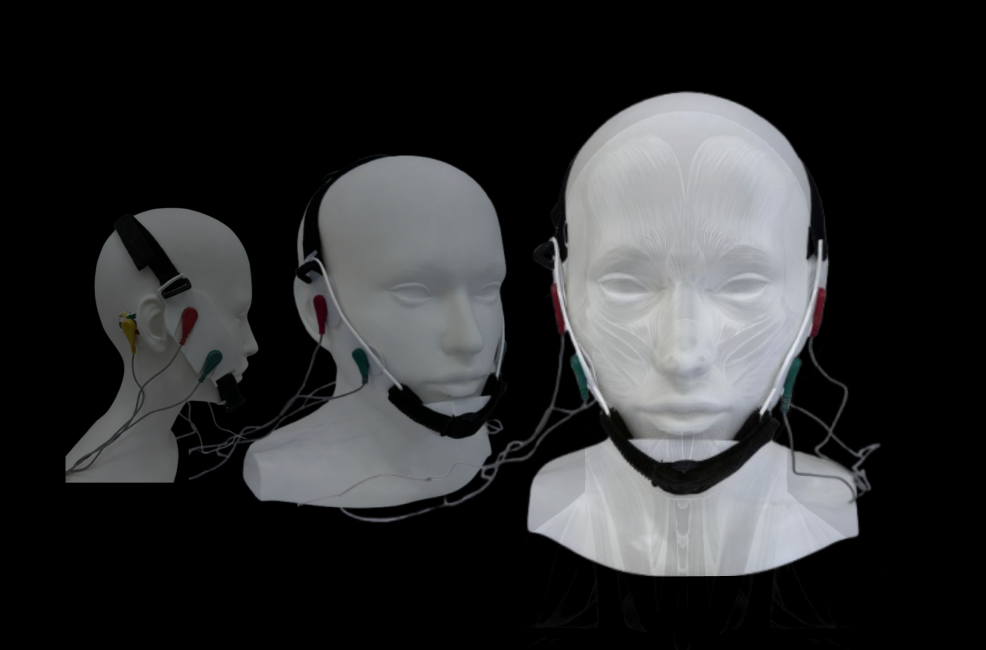

Silent Signal
A passive headset that watches for the earliest sign of stroke — facial asymmetry — and calls for help when the person wearing it can’t.

- Challenge
- Older adults living alone often miss stroke’s treatment window because no one notices in time.
- Insight
- During a stroke you can’t press, speak or remember, so every device that waits for the user fails.
- Result
- A wearable prototype that detects asymmetry in real time and alerts caregivers with no action from the user.
In stroke care, the delay before anyone notices is what does the damage.
4.5hTreatment window after onset
70–80%Of patients miss it
1.9MNeurons lost per minute of delay
In interviews, people at risk explained why existing devices go unused.
I don’t want to wear a tag. I’ll just hang it by my bedside. If something really happens, I can reach it.
It’s okay, why can’t I get up… someone needs to help me call for help.
Every product on the market asks the patient to act.
Stroke takes away movement, speech and clear thinking at once. The only reliable trigger is one that needs nothing from the user.
| Smart watch | Emergency button | Voice assistant | Silent Signal | |
|---|---|---|---|---|
| Specific to stroke | ||||
| Works without user action | ||||
| Works if speech is lost |
Sense, learn, detect, alert.
Passive sensing
Two EMG electrodes on the cheek muscles. No buttons, no screen.
Personal baseline
Learns the wearer’s own facial symmetry over 72 hours.
Asymmetry detection
A CNN-LSTM model compares both sides of the face in real time.
Silent alert
Caregivers and emergency contacts are notified automatically.
Validated in the lab, accurate enough to justify a field trial.
94%Real-time detection accuracy
93.3%Specificity
92.8%Sensitivity
100msFrom detection to alert